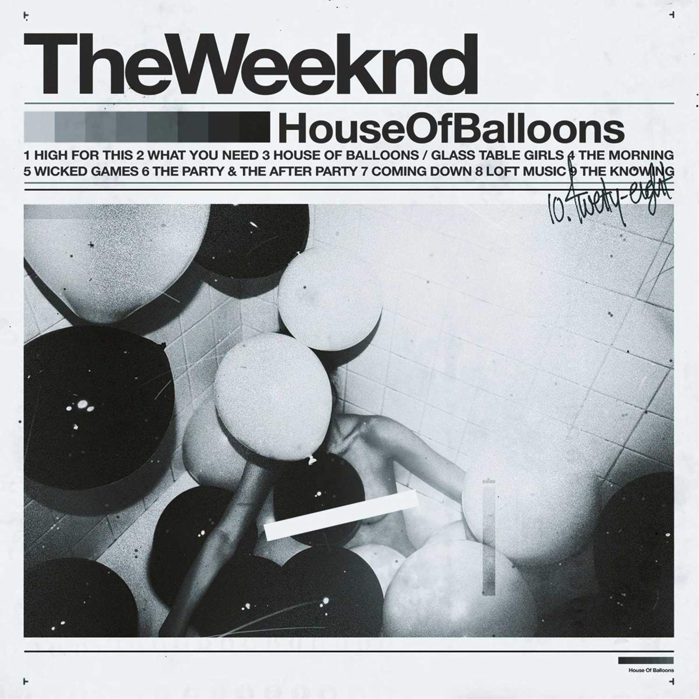
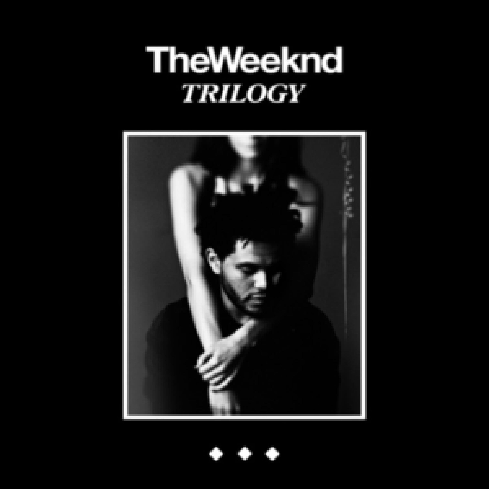
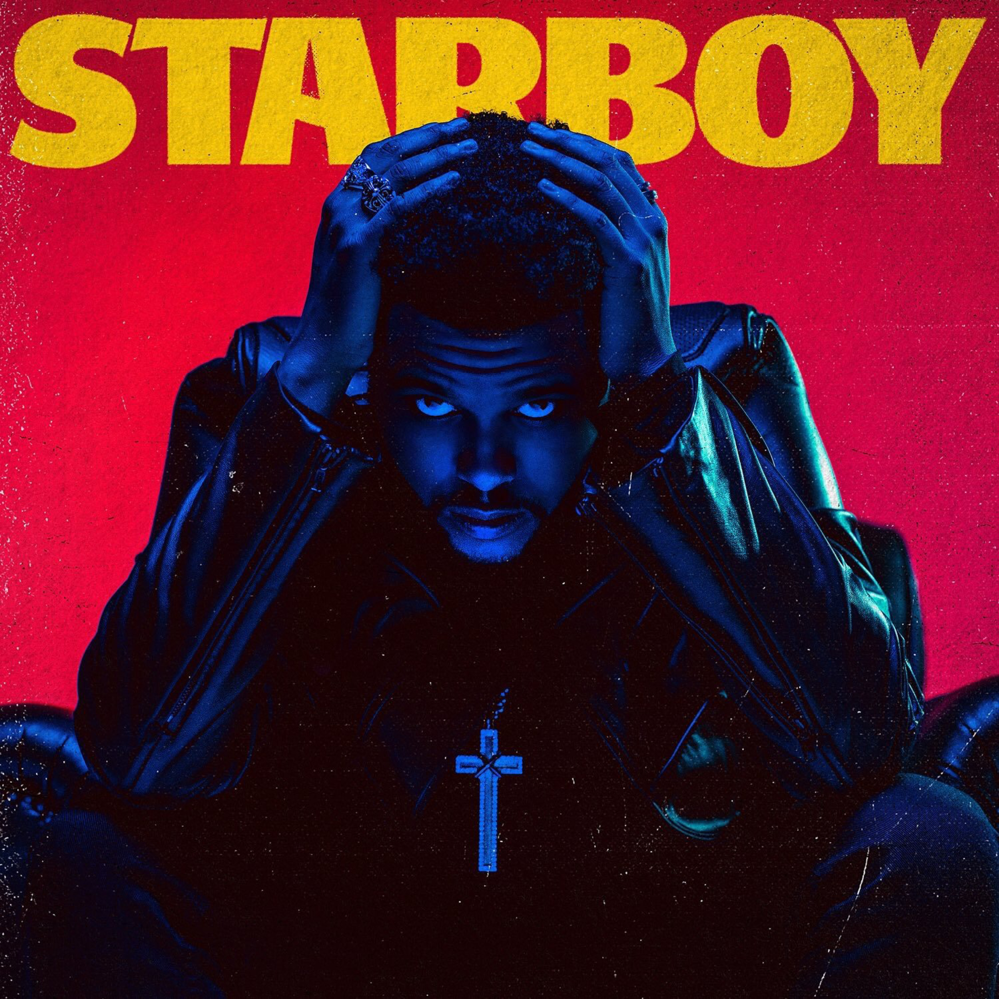

HOUSE OF BALLOONS
2011

TRIOLOGY
2012

STARBOY
2016

AFTER HOURS
2020
Abel Tesfaye aka The Weeknd, is a Canadian singer, songwriter, and record producer. Tesfaye is notable for his original and eccentric style, soaring falsetto and its singular tremolo, and his influence on artists in many contemporary music styles including pop, hip hop, and rhythm and blues The Weeknd began his recording career in 2010, anonymously uploading several songs to YouTube. A year later, the Weeknd released the mixtapes House of Balloons, Thursday, and Echoes of Silence, and quickly earned a following and critical recognition from several mainstream publications due to his dark style of Contemporary R&B and the mystique surrounding his identity.In 2012, he signed with Republic Records and re-released the mixtapes in the compilation album Trilogy.
His debut studio album, Kiss Land, was released in 2013. He followed it with Beauty Behind the Madness, one of the best-selling 2015 albums.With the Billboard Hot number-one singles "Can't Feel My Face" and "The Hills", Beauty Behind the Madness won Best Urban Contemporary Album.The Weeknd's 3rd album Starboy 2016 was a similar commercial success and included the number-one single of the same name, and also won Best Urban Contemporary Album at the 2018 Grammy Awards. His fourth album, After Hours, featured the Billboard Hot number-one singles , His song "Blinding Lights" has become the first ever song to spend over a year in the top ten of the chart.The Weeknd is on the list of best-selling music artists with over 75 million records sold.
He has won 3 Grammy Awards, 5 American Music Awards, 9 Billboard Music Awards, 2 MTV Video Music Awards, 9 Juno Awards, and was nominated for an Academy Award. He holds several chart records, being the first artist to simultaneously hold the top three positions on the Billboard Hot R&B Songs chart with "Can't Feel My Face", "Earned It", and "The Hills". He was awarded the Allan Slaight Award by Canada's Walk of Fame. In 2017, he was featured on the cover of Forbes for his annual earnings of $92 million. He chose his stage name in tribute to when he was 17 years old, when, along with a friend, he left home, dropped out of high school, and drove off, never coming home. He left out the letter E due to copyright issues with the Canadian band the Weekend.
2011
2012
2016
2020
To honor the first day of Black History month, today Pepsi Super Bowl LV halftime performer The Weeknd chose a local Tampa black-owned restaurant, Mama's Southern Soul Food to feed the frontline healthcare workers at AdventHealth Carrollwood (nearby the Stadium where the Superbowl will take place) who received 150 meals delivered by Postmates, to recognize and reward their tireless efforts to save lives and keep their community safe.In May 2020, Postmates saw areas of actionable change they could take so they introduced a collection to highlight Black-Owned Restaurants in the app in all markets to make it easier to find and support black-owned businesses in their neighborhoods. This partnership with The Weeknd marks their first collaboration in this space with a public figure and pulls the option back to the front page.
Watch The Weeknd unveil his iconic vision to the Raymond James Stadium at Superbowl LV on Feb 7 for the Pepsi Super Bowl LV Halftime show on CBS.